Antes: una planilla de miles de filas mantenida a mano, sin validaciones y con datos inconsistentes.
Ahora: cada usuario ve su información, el sistema aplica las reglas de la norma y avisa lo que requiere atención.
Perfiles: qué puede hacer cada usuario
Perfil
Puede
Encargado de Mantención
Catastro, planificación, bitácora, correctivos, catálogos y reportes de su establecimiento. Ve los convenios.
Técnico Interno
Registra la bitácora de los equipos que tiene asignados y los mantenimientos correctivos. Ve el catastro y la planificación.
Encargado de Convenios
Convenios, su ejecución mensual y proveedores. Ve los reportes.
Jefatura
Ve todo el sistema y descarga reportes, sin modificar datos.
Administrador
Todo lo anterior, más usuarios, roles y registro de accesos.
Establecimientos asignados: un usuario con establecimientos asignados solo ve y registra los datos de esos establecimientos. Sin establecimientos, ve todos.
Todos los perfiles
Ingreso al sistema
Correo y contraseña → Entrar.
Para salir: círculo con sus iniciales → Salir.
5 intentos fallidos bloquean la cuenta por 15 minutos, incluso con la contraseña correcta.
¿Ha olvidado su contraseña? envía un enlace por correo: sirve una vez y vence en 60 minutos.
Contraseña de al menos 12 caracteres.
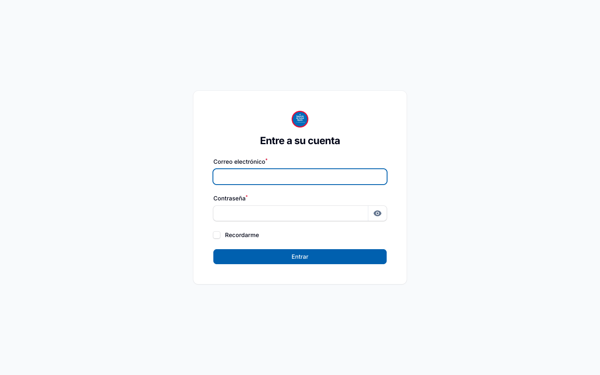
Todos los perfiles
Cómo está organizada la pantalla
Menú lateral: las secciones de su perfil. La opción en uso se marca en rojo.
Buscador: equipos por nombre, n° de inventario o serie.
Campana: notificaciones, por ejemplo un convenio sobregirado.
Listados: buscar, filtros, columnas y Exportar a Excel con los filtros aplicados.
Campos con * son obligatorios; los errores aparecen en rojo.
Guía de usuario está siempre disponible en el menú.
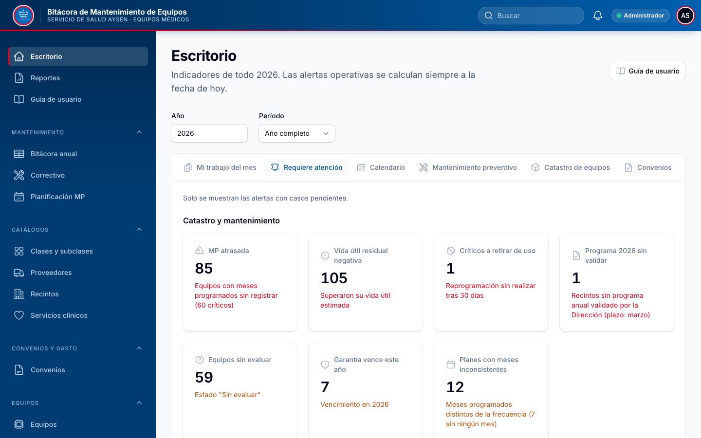
Todos los perfiles
Escritorio: lo que requiere atención
Elegir Año y Período: los indicadores se recalculan.
Requiere atención: solo las alertas con casos, primero las urgentes.
Clic en una alerta abre el listado con esos casos.
Cumplimiento = realizadas ÷ programadas del período.
En QA verán la alerta “Planes con meses inconsistentes” con 12 planes: 7 equipos de laboratorio sin meses y 5 con meses distintos a su frecuencia. Vienen así de la planilla y dependen de las definiciones solicitadas.
Alerta
Qué hacer
MP atrasada
Registrar esos meses
Críticos a retirar de uso
Realizar o retirar
Críticos sin plan
Crear su plan
Programa sin validar
Ficha del recinto
Convenios sobregirados
Revisar ejecución
Convenios por vencer
Gestionar renovación
Perfil · 30 minutos · casos EM-01 a EM-12
Encargado de Mantención
Mantiene el catastro y los planes anuales, asigna a los técnicos, revisa las alertas, registra el mantenimiento de su establecimiento y prepara los informes.
Encargado de Mantención
Equipos: catastro y ficha
Equipos: buscar por nombre o n° de inventario.
Ver: datos, vida útil residual, cumplimiento del año, planes, correctivos y retiros de uso.
Crear equipo: recinto, servicio clínico, nombre, inventario y criticidad.
Un tipo de equipo crítico de la norma exige criticidad Crítico.
Retirar de uso y Registrar reingreso quedan en la ficha.
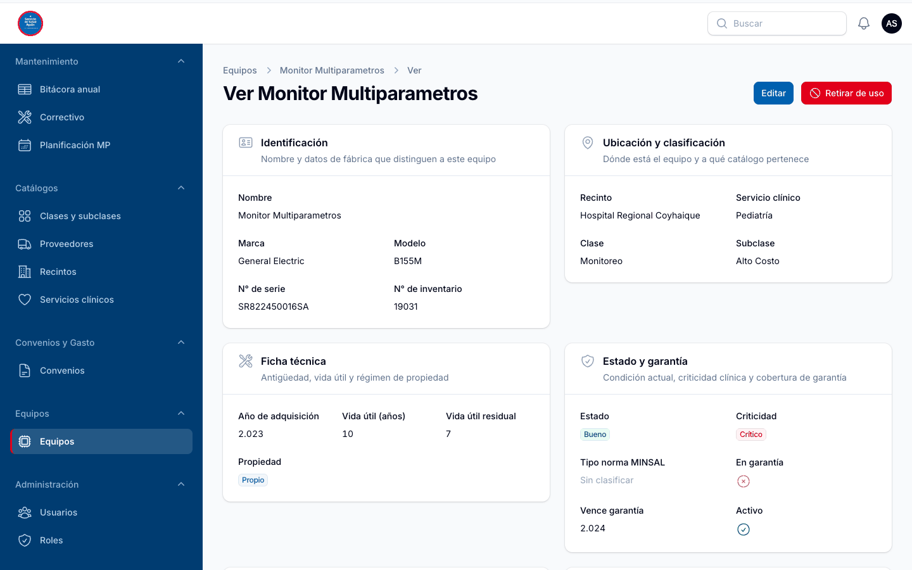
Encargado de Mantención
Planificación del mantenimiento preventivo
Planificación MP → Crear plan de mantenimiento.
Al elegir la frecuencia, la vista previa muestra los meses que se programarán.
Responsable interno: el técnico que registrará la bitácora del equipo.
Equipo crítico: mínimo 2 mantenciones al año, salvo con garantía vigente.
Cambiar la frecuencia no borra los meses ya realizados.
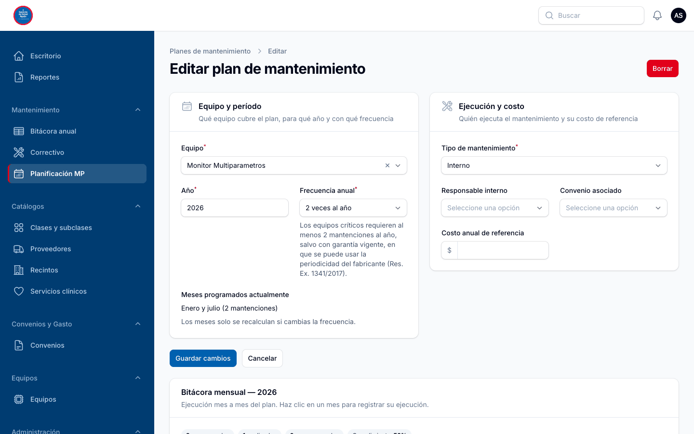
Encargado de Mantención · Técnico Interno
Bitácora: registrar las mantenciones
–Sin programar
XProgramado
√Realizado
ꓣReprogramado
Clic en un mes programado → Realizado o Reprogramado.
Realizado: fecha real obligatoria, no futura.
Reprogramado: la causa en observaciones es obligatoria.
Crítico reprogramado: 30 días para realizarlo.
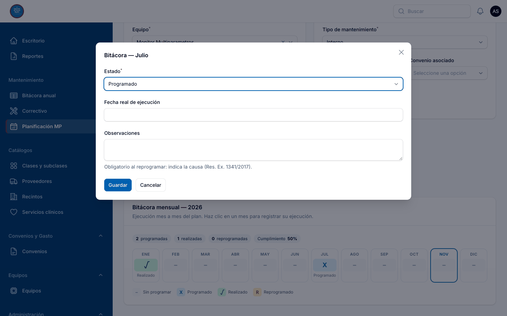
Encargado de Mantención · Técnico Interno
Mantenimiento correctivo
Correctivo → Crear mantenimiento correctivo.
Equipo, fecha de la falla, descripción y costo.
Aparece en la ficha del equipo.
Su costo suma al gasto correctivo del Escritorio.
Para definir con el requirente: ¿quién registra los correctivos? Hoy el Técnico Interno puede registrarlos para cualquier equipo de su establecimiento.
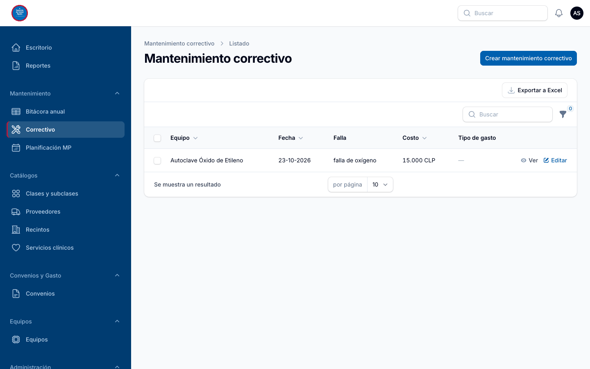
Encargado de Mantención
Ficha del recinto y catálogos
Catálogos → Recintos → Ver.
Responsable de MP designado por la Dirección.
Programa anual de MP validado.
Gasto programado anual: el Escritorio lo compara con lo ejecutado.
Un servicio clínico en uso no se elimina: se desactiva.
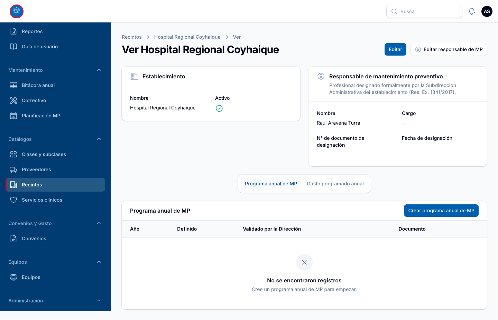
Encargado de Mantención · Jefatura · Convenios
Reportes e informes
Elegir año y período (mes, trimestre, semestre o año).
Descargar Excel: Catastro + plan anual con el formato de la planilla y los 12 meses.
Versión imprimible: informe de Cumplimiento de equipos críticos de la norma, con encabezado y firmas.
Convenios y ejecución con detalle por orden de compra.
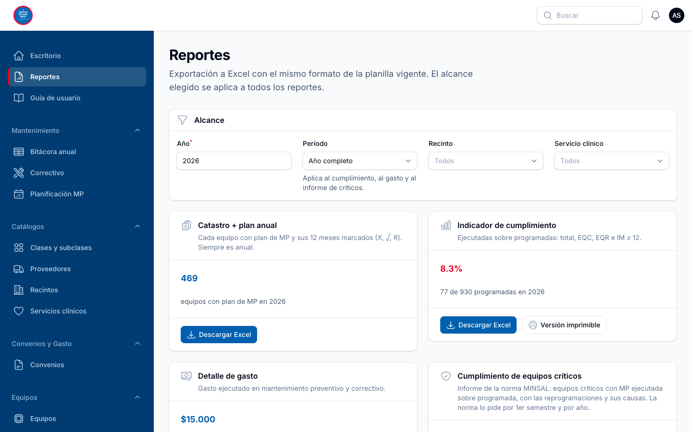
Encargado de Mantención · práctica
Ahora ustedes
Haga clic en una alerta de Requiere atención y revise el listado.EM-01
Abra la ficha de un equipo crítico y revise su plan y cumplimiento.EM-03
Cree un plan, observe la vista previa y asigne un Responsable interno.EM-06
Reprograme un mes sin causa y luego con causa.EM-08
Revise la ficha de su recinto: responsable, programa y gasto.EM-11
En Reportes, abra la Versión imprimible del primer semestre.EM-12
El resto de los casos (EM-02, 04, 05, 07, 09, 10) se ejecutan siguiendo la pauta.
Perfil · 20 minutos · casos TI-01 a TI-05
Técnico Interno
Registra en la bitácora las mantenciones preventivas de los equipos que tiene asignados y anota las fallas como mantenimiento correctivo.
Técnico Interno
Mi trabajo del mes y Bitácora anual
Mi trabajo del mes (Escritorio): Pendientes, Realizadas, Reprogramadas y MP atrasada.
Bitácora anual: todos los equipos con sus 12 meses.
Buscar el equipo por n° de inventario y hacer clic en el mes.
Solo se pueden abrir los meses de sus equipos asignados; los demás se ven sin enlace.
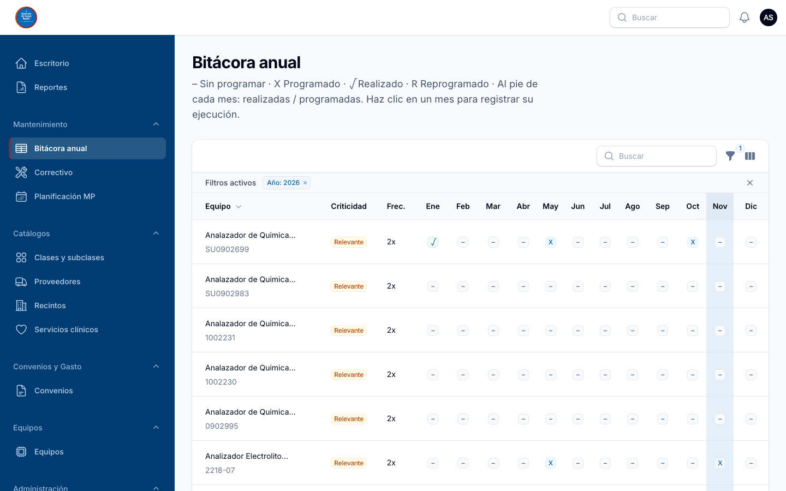
Técnico Interno · práctica
Ahora ustedes
Revise cuántas mantenciones tiene Pendientes este mes.TI-01
En Bitácora anual, busque el Equipo B y registre un mes programado como Realizado con su fecha real.TI-02
Abra de nuevo el mes y compruebe que muestra √ con la fecha.TI-02
En el Equipo A, intente Realizado sin fecha y con fecha de mañana.TI-03
Busque el Equipo C: ¿puede registrar?TI-04
Registre una falla en Correctivo y búsquela en la ficha del equipo.TI-05
Perfil · 15 minutos · casos EC-01 a EC-05
Encargado de Convenios
Registra los convenios de mantenimiento, su gasto mensual (órdenes de compra o facturas) y los proveedores, y controla sobregiros y vencimientos.
Encargado de Convenios
Convenios y ejecución mensual
Convenios: columna Vigencia (“Vence en N días”) y % de ejecución.
En la ficha: Registrar ejecución mensual con mes, n° de orden de compra y monto.
Superar el monto anual: notificación Convenio sobregirado en la campana. No bloquea el registro.
Alertas: Convenios sobregirados y por vencer (60 días).
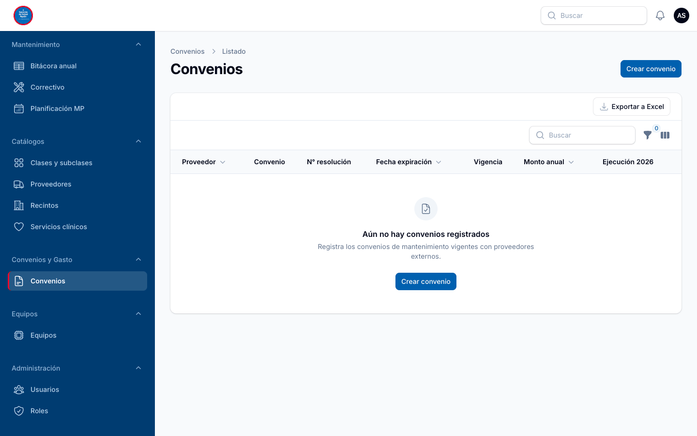
Encargado de Convenios · práctica
Ahora ustedes
Cree un convenio con una fecha de expiración incorrecta y luego corríjala.EC-01
Registre una ejecución mensual de $400.000 y revise el % de ejecución.EC-02
Registre $700.000 más y observe la notificación de sobregiro.EC-03
Revise las alertas de convenios en el Escritorio.EC-04
Descargue el Excel de Convenios y ejecución.EC-05
Jefatura · 10 minutos · casos J-01 a J-04
Jefatura: seguimiento e informes
Consulta el avance, el gasto y los informes. Ve todo, pero no modifica datos.
Cambie el Período del Escritorio a un trimestre.J-01
Abra la alerta MP atrasada.J-02
Guarde como PDF el informe de equipos críticos.J-03
Compruebe que no hay botones para crear o editar.J-04
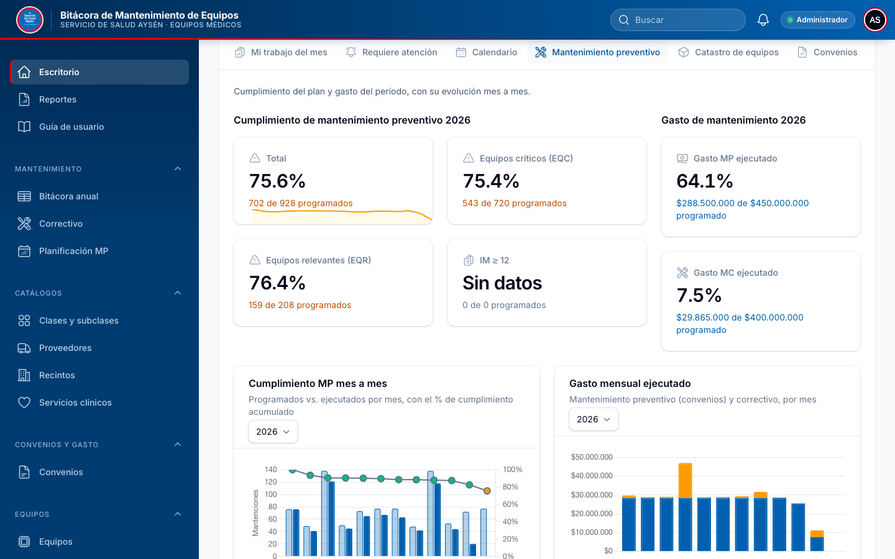
Administrador · 10 minutos · casos A-01 a A-04
Administrador: usuarios y accesos
Administración → Usuarios: perfil y establecimientos de cada persona.
Desmarcar Activo impide ingresar y recibir enlaces de recuperación.
Registro de accesos: ingresos, fallos, bloqueos, salidas y cambios de contraseña, con fecha, IP y navegador. No se puede modificar ni eliminar.
Práctica
Cree un usuario Técnico Interno.A-01
Asígnelo como Responsable interno del Equipo C.A-02
Desactívelo e intente ingresar.A-03
Encuentre el intento en Registro de accesos.A-04
Reglas que aplica el sistema
Regla
En la práctica
Realizado con fecha
Fecha real obligatoria y no posterior a hoy.
Reprogramar exige la causa
Observaciones obligatorias; n° de documento opcional.
Plazo de 30 días
Crítico reprogramado sin realizar → alerta Críticos a retirar de uso.
Mínimo 2 al año en críticos
Salvo garantía vigente.
Tipo de la norma ⇒ crítico
Los tipos de la Res. Ex. 1341/2017 exigen criticidad Crítico.
El plan se genera solo
La frecuencia programa los meses.
Cada uno en su recinto
Solo se ven y registran los establecimientos asignados.
Catálogos protegidos
Un valor en uso no se elimina; se desactiva.
Prueba de aceptación: cómo se registra
Resultado de cada caso
C
Conforme: hace lo esperado.
NC
No conforme: se anota una observación.
NA
No aplica, por causa ajena al sistema.
Tipo de observación
Bloqueante
Impide el trabajo o produce datos incorrectos.
No bloqueante
Tiene una alternativa; fecha comprometida.
Mejora
Cambio deseable; requerimiento nuevo.
Resultado de la sesión
Aceptado: todos C o NA, sin bloqueantes.
Aceptado con observaciones: solo no bloqueantes o mejoras, con responsable y fecha.
No aceptado: alguna observación bloqueante. Se corrige y se repiten los casos afectados.
Próximos pasos
Acta de aceptación firmada por el requirente.
Correcciones de las observaciones, si las hay.
Carga de datos reales: usuarios y planilla de cada establecimiento.
Paso a producción y marcha blanca: desde ese momento, lo registrado es definitivo.
Definiciones pendientes del requirente
· Usuarios: nombre, correo, perfil y establecimiento.
· Equipos de laboratorio sin meses programados.
· Equipos con meses distintos a su frecuencia.
· Monitores de diálisis: ¿críticos?
· Ubicación de los equipos.
· Quién registra los correctivos.
Gracias
Consultas y dudas: Guía de usuario, disponible en el menú del sistema.
Sistema de Bitácora de Mantenimiento de Equipos · Servicio de Salud Aysén
Notas del presentador
Índice (Esc para cerrar)
← → navegar · N notas · F pantalla completa · O índice